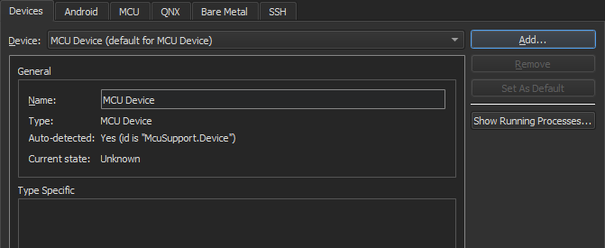

Connect MCU devices
Note: Enable the McuSupport plugin to develop for MCUs.
To configure a connection between Qt Creator and your MCU board:
- Go to Preferences > Devices > MCU.
- In Qt for MCUs SDK, specify the path to the directory where you installed Qt for MCUs SDK.
- In Targets supported by the Qt for MCUs SDK, select your MCU board.
- In Requirements, check that the platform-specific requirements are met. This depends on the target:
- For STM32 targets:
- The GNU ARM Embedded Toolchain or IAR ARM Compiler path.
- The STM32CubeProgrammer install path.
- The Board SDK for the chosen target.
- The FreeRTOS Sources for the chosen target.
- For NXP targets:
- The GNU ARM Embedded Toolchain or IAR ARM Compiler path.
- The MCUXpresso IDE install path.
- The Board SDK for the chosen target.
- The FreeRTOS Sources for the chosen target.
- For Renesas targets:
- The Green Hills Compiler path.
- The Renesas Graphics Library path.
- For Infineon targets:
- The Green Hills Compiler for ARM path.
- The Graphics Driver for Traveo II Cluster Series path.
- The Infineon Auto Flash Utility path.
- For STM32 targets:
- Select Automatically create kits for all available targets on start to create kits automatically the next time Qt Creator starts.
Note: Select Create Kit to manually create kits for the target.
- Select Apply to save the preferences.
Add MCU devices
Qt Creator automatically adds a default MCU device when you select Apply in the MCU tab after configuring the MCU tool chain.

To add MCU devices, select Preferences > Devices > Add > MCU Device > Start Wizard:
- In Name, give the device a name.
- In Type, select the board type.
- Select Apply to add the device.
See also Enable and disable plugins, How To: Develop for MCUs, and Developing for MCUs.